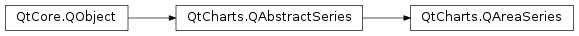

QtCharts.QAreaSeries¶
Note
This class was introduced in Qt 5.7.
Synopsis¶
Functions¶
- def
borderColor() - def
brush() - def
color() - def
lowerSeries() - def
pen() - def
pointLabelsClipping() - def
pointLabelsColor() - def
pointLabelsFont() - def
pointLabelsFormat() - def
pointLabelsVisible() - def
pointsVisible() - def
setBorderColor(color) - def
setBrush(brush) - def
setColor(color) - def
setLowerSeries(series) - def
setPen(pen) - def
setPointLabelsClipping([enabled=true]) - def
setPointLabelsColor(color) - def
setPointLabelsFont(font) - def
setPointLabelsFormat(format) - def
setPointLabelsVisible([visible=true]) - def
setPointsVisible([visible=true]) - def
setUpperSeries(series) - def
upperSeries()
Signals¶
- def
borderColorChanged(color) - def
clicked(point) - def
colorChanged(color) - def
doubleClicked(point) - def
hovered(point, state) - def
pointLabelsClippingChanged(clipping) - def
pointLabelsColorChanged(color) - def
pointLabelsFontChanged(font) - def
pointLabelsFormatChanged(format) - def
pointLabelsVisibilityChanged(visible) - def
pressed(point) - def
released(point) - def
selected()
Detailed Description¶
-
class
PySide2.QtCharts.QtCharts.QAreaSeries([parent=nullptr])¶ -
class
PySide2.QtCharts.QtCharts.QAreaSeries(upperSeries[, lowerSeries=nullptr]) Parameters: - lowerSeries –
PySide2.QtCharts.QtCharts::QLineSeries - upperSeries –
PySide2.QtCharts.QtCharts::QLineSeries - parent –
PySide2.QtCore.QObject
- lowerSeries –
-
PySide2.QtCharts.QtCharts.QAreaSeries.borderColor()¶ Return type: PySide2.QtGui.QColor
-
PySide2.QtCharts.QtCharts.QAreaSeries.borderColorChanged(color)¶ Parameters: color – PySide2.QtGui.QColor
-
PySide2.QtCharts.QtCharts.QAreaSeries.brush()¶ Return type: PySide2.QtGui.QBrush
-
PySide2.QtCharts.QtCharts.QAreaSeries.clicked(point)¶ Parameters: point – PySide2.QtCore.QPointF
-
PySide2.QtCharts.QtCharts.QAreaSeries.color()¶ Return type: PySide2.QtGui.QColor
-
PySide2.QtCharts.QtCharts.QAreaSeries.colorChanged(color)¶ Parameters: color – PySide2.QtGui.QColor
-
PySide2.QtCharts.QtCharts.QAreaSeries.doubleClicked(point)¶ Parameters: point – PySide2.QtCore.QPointF
-
PySide2.QtCharts.QtCharts.QAreaSeries.hovered(point, state)¶ Parameters: - point –
PySide2.QtCore.QPointF - state –
PySide2.QtCore.bool
- point –
-
PySide2.QtCharts.QtCharts.QAreaSeries.lowerSeries()¶ Return type: PySide2.QtCharts.QtCharts::QLineSeries
-
PySide2.QtCharts.QtCharts.QAreaSeries.pen()¶ Return type: PySide2.QtGui.QPen
-
PySide2.QtCharts.QtCharts.QAreaSeries.pointLabelsClipping()¶ Return type: PySide2.QtCore.bool
-
PySide2.QtCharts.QtCharts.QAreaSeries.pointLabelsClippingChanged(clipping)¶ Parameters: clipping – PySide2.QtCore.bool
-
PySide2.QtCharts.QtCharts.QAreaSeries.pointLabelsColor()¶ Return type: PySide2.QtGui.QColor
-
PySide2.QtCharts.QtCharts.QAreaSeries.pointLabelsColorChanged(color)¶ Parameters: color – PySide2.QtGui.QColor
-
PySide2.QtCharts.QtCharts.QAreaSeries.pointLabelsFont()¶ Return type: PySide2.QtGui.QFont
-
PySide2.QtCharts.QtCharts.QAreaSeries.pointLabelsFontChanged(font)¶ Parameters: font – PySide2.QtGui.QFont
-
PySide2.QtCharts.QtCharts.QAreaSeries.pointLabelsFormat()¶ Return type: unicode
-
PySide2.QtCharts.QtCharts.QAreaSeries.pointLabelsFormatChanged(format)¶ Parameters: format – unicode
-
PySide2.QtCharts.QtCharts.QAreaSeries.pointLabelsVisibilityChanged(visible)¶ Parameters: visible – PySide2.QtCore.bool
-
PySide2.QtCharts.QtCharts.QAreaSeries.pointLabelsVisible()¶ Return type: PySide2.QtCore.bool
-
PySide2.QtCharts.QtCharts.QAreaSeries.pointsVisible()¶ Return type: PySide2.QtCore.bool
-
PySide2.QtCharts.QtCharts.QAreaSeries.pressed(point)¶ Parameters: point – PySide2.QtCore.QPointF
-
PySide2.QtCharts.QtCharts.QAreaSeries.released(point)¶ Parameters: point – PySide2.QtCore.QPointF
-
PySide2.QtCharts.QtCharts.QAreaSeries.selected()¶
-
PySide2.QtCharts.QtCharts.QAreaSeries.setBorderColor(color)¶ Parameters: color – PySide2.QtGui.QColor
-
PySide2.QtCharts.QtCharts.QAreaSeries.setBrush(brush)¶ Parameters: brush – PySide2.QtGui.QBrush
-
PySide2.QtCharts.QtCharts.QAreaSeries.setColor(color)¶ Parameters: color – PySide2.QtGui.QColor
-
PySide2.QtCharts.QtCharts.QAreaSeries.setLowerSeries(series)¶ Parameters: series – PySide2.QtCharts.QtCharts::QLineSeries
-
PySide2.QtCharts.QtCharts.QAreaSeries.setPen(pen)¶ Parameters: pen – PySide2.QtGui.QPen
-
PySide2.QtCharts.QtCharts.QAreaSeries.setPointLabelsClipping([enabled=true])¶ Parameters: enabled – PySide2.QtCore.bool
-
PySide2.QtCharts.QtCharts.QAreaSeries.setPointLabelsColor(color)¶ Parameters: color – PySide2.QtGui.QColor
-
PySide2.QtCharts.QtCharts.QAreaSeries.setPointLabelsFont(font)¶ Parameters: font – PySide2.QtGui.QFont
-
PySide2.QtCharts.QtCharts.QAreaSeries.setPointLabelsFormat(format)¶ Parameters: format – unicode
-
PySide2.QtCharts.QtCharts.QAreaSeries.setPointLabelsVisible([visible=true])¶ Parameters: visible – PySide2.QtCore.bool
-
PySide2.QtCharts.QtCharts.QAreaSeries.setPointsVisible([visible=true])¶ Parameters: visible – PySide2.QtCore.bool
-
PySide2.QtCharts.QtCharts.QAreaSeries.setUpperSeries(series)¶ Parameters: series – PySide2.QtCharts.QtCharts::QLineSeries
-
PySide2.QtCharts.QtCharts.QAreaSeries.upperSeries()¶ Return type: PySide2.QtCharts.QtCharts::QLineSeries
© 2018 The Qt Company Ltd. Documentation contributions included herein are the copyrights of their respective owners. The documentation provided herein is licensed under the terms of the GNU Free Documentation License version 1.3 as published by the Free Software Foundation. Qt and respective logos are trademarks of The Qt Company Ltd. in Finland and/or other countries worldwide. All other trademarks are property of their respective owners.